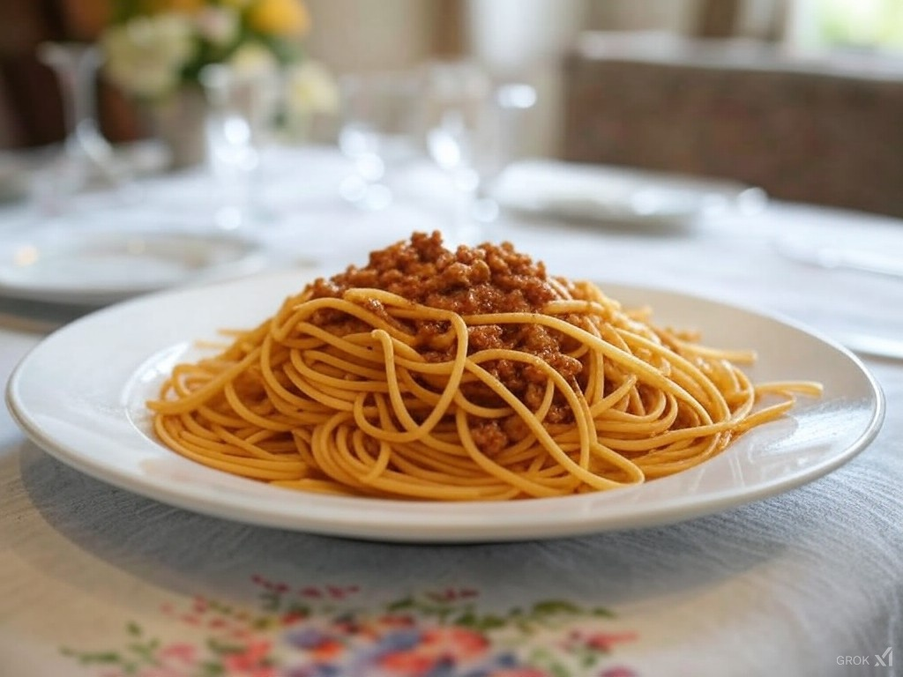

Spaghetti

Description
Spaghetti with meat sauce is one of the first dishes
that I learned to cook that would actually impress others.
The great thing is that it is so simple yet still offers
a medium for complex flavors to develop.
This dish can be done quickly for those nights after work when
you're going through the worst combination of exhausted and hungry,
or it can simmer all day for increased flavor. Either way,
it's a great dish to have as a staple for your family.
You will notice that there aren't amounts associated with the
items in the following "Ingredients" list. This is by design.
I haven't followed a strict recipe for years, but instead cook
by taste. This has made me better and more creative in the kitchen,
and I recommend the same for everyone. Don't be scared. You'll
likely mess up at some point and create an abomination, but that's
part of the process of getting better.
Ingredients
- Ground Beef
- Minced Garlic
- Garlic Powder
- Onion Powder
- Smoked Paprika
- Italian Seasoning
- Red Wine (optional)
- Canned Tomato Sauce
- Sugar
- Salt
- Pasta Noodles
Steps
- Brown the ground beef in a skillet along with the minced garlic.
- Drain the fat from the ground beef and minced garlic and return to pan.
- Add the garlic powder, onion powder, smoked paprika, and italian seasoning, and cook on medium heat for 5-10 minutes
- [Optional] Deglaze with a splash (or more) of your favorite red wine.
- Add the canned tomato sauce along with a pinch or two of sugar. This will help mellow the bitterness of the tomato.
- Simmer on low heat, stirring occasionaly for as long as you'd like the flavor to develop. I recommend using a splash guard to keep things from getting messy.
- Salt to taste.
- Cook your favorite pasta per its instructions in salted water. I prefer angel hair for this dish.
- Once your pasta is ready and drained you can plate it then ladle your finished meat sauce on top.
- Enjoy
Home